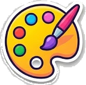

Quick Doodle
Draw it. Guess it. Lose it laughing.
Somebody has sixty seconds and a blank canvas to make “octopus” recognisable, and good luck with that. Quick Doodle is the fast-draw guessing game in Party Fever, where one player sketches a secret word on their phone and it appears live on the TV for everyone else to shout out. You cannot write letters, you cannot mime, and the clock is merciless. Half the fun is the masterpiece; the other half is watching the whole family scream guesses while an increasingly frantic artist keeps adding more legs.
With hundreds of words spanning easy doodles like cat and cake to fiendish challenges like harpsichord and penny farthing, every round finds the sweet spot between confidence and chaos. Pick your colours, choose your brush, and let the guessing begin.
How it works
One player is the drawer each round and sees a secret word on their phone. They draw it on their phone canvas using a pen, marker, or calligraphy brush in any of eight colours, while the drawing streams live to the TV. Everyone else races to type their guesses. The first correct guess scores points for both the guesser and the artist, then a new drawer takes the pen. Play rotates so everyone gets a turn to draw.
No artistic skill required, and honestly, less skill is funnier.
Tips and tactics
Start with the big shape before the details. A recognisable silhouette gets guesses flowing faster than a beautifully rendered corner of something nobody can place.
Draw the noun, not the scene. If the word is lighthouse, resist painting the sea and the sky; the tower and the beam are what people are searching for.
Watch the guesses as they come in. If everyone is circling around the wrong idea, erase and attack it from a completely different angle rather than adding more detail to a drawing that is not landing.
When to play it
Quick Doodle is the ideal opener for a game night. It is loud, it is silly, and it breaks the ice within about thirty seconds, which makes it perfect when the room has not warmed up yet.
It also works beautifully with mixed ages. Children often out-guess adults, and a wobbly drawing from a grandparent is usually the highlight of the evening. Nobody needs to be good at art for it to work; in fact, the worse the drawing, the better the round.
Common questions
How many players do you need for Quick Doodle?
Quick Doodle works best with three or more players and suits any group size for a family game night.
Do you need to be good at drawing?
Not at all. The game is designed so that rough, funny sketches create the most laughter. Guessing the wobbly drawings is half the fun.
What ages can play Quick Doodle?
It is suitable for ages six and up, making it a genuine all-ages family game.